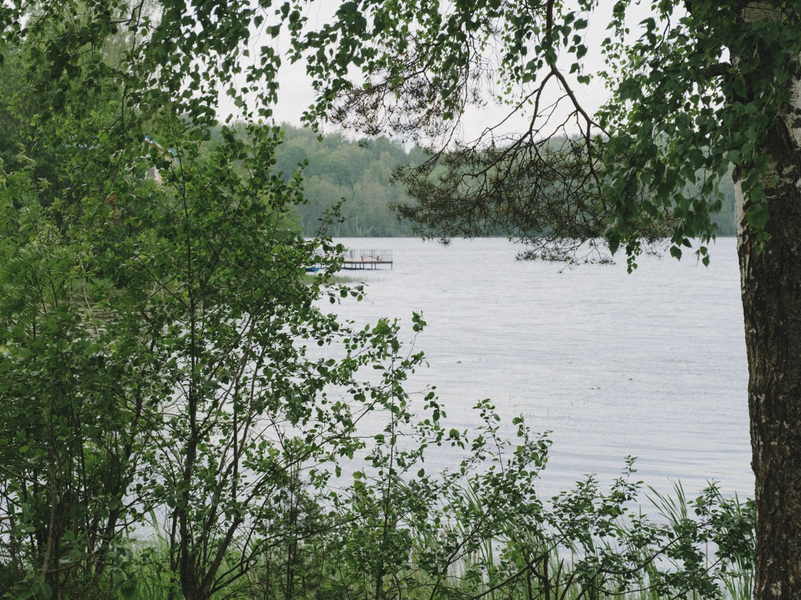
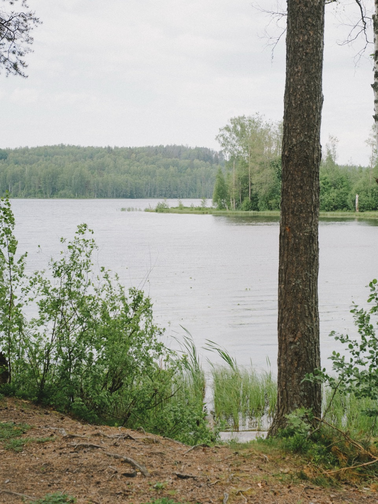
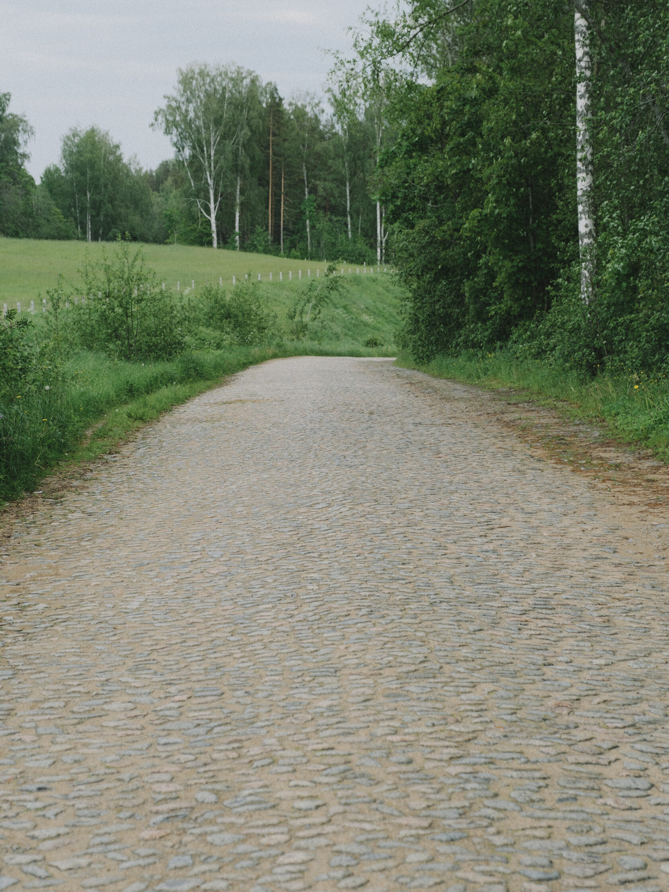

КЛУБНЫЙ ПОСЁЛОК · ВСЕВОЛОЖСКИЙ РАЙОН
Участки у озера Сиркоярви
Вуолье — 233 участка среди хвойного леса рядом с Матоксой. 47 км от КАД, до озера 5 минут пешком.
- от 1,3 млн ₽за участок*
- 6–15 сотокплощадь
- 500 мдо озера
- до 1 годарассрочка
* По публичному генплану vuolie.ru на 17.10.2026. Цена №78 (210 000 ₽) не подтверждена и не учтена в «от».
01 / О ПОСЁЛКЕ
Озеро. Холмы. Тишина.
Вуолье — загородный посёлок среди хвойных лесов, в часе езды от Петербурга. Территория с историей с XVIII века: природный рельеф, виды на луга и поля, сосновый воздух и ягодные поляны.
- Озеро Сиркоярви — 500 м5 минут пешком, прогулочная дорожка вдоль берега
- Хвойный лес вокругЖивописный рельеф и открытые виды
- 47 км от КАДОколо 60 минут на машине, подъезд по финской брусчатке
- 20 га, 233 участкаПлощади от 6 до 15 соток

02 / ГЕНПЛАН
Найдите свой участок
Подлинный генплан: 233 участка с исходными границами и площадями. Данные на 17.10.2026
Участок №78 не входит в результаты по бюджету: в источнике указано 210 000 ₽ — значительно ниже соседних, цена не подтверждена.
Участок № —
- Площадь
- — сот.
- В метрах
- —
- За сотку
- —
Наведите на участок — увидите цену. Нажмите — откроется карточка. Тяните план, масштаб колесом с Ctrl или жестом.
| № | Площадь | Цена | Действия |
|---|
* По данным vuolie.ru ↗ на 17.10.2026: 187 опубликованных цен в рублях за участок, 46 участков отмечены проданными. Цена за сотку — наш расчёт из общей стоимости. Статусы не обновляются в реальном времени. Не является публичной офертой.
03 / ИНФРАСТРУКТУРА
Всё для жизни — уже в концепции
Коммуникации и благоустройство посёлка по данным застройщика. Сроки готовности каждого объекта уточняйте у менеджера.
- Широкие улицыДорожное полотно 10 м, покрытие из асфальтовой крошки
- БезопасностьКПП, круглосуточный пост охраны и видеонаблюдение
- ВодопроводЦентрализованное поселковое водоснабжение
- Электричество 15 кВтПодключение к сетям через Госуслуги
- ОсвещениеУличные фонари по всему посёлку
- Детская и спортивная площадкиДля игр и активного отдыха
- Мангальные зоныОбщественные пространства для отдыха с близкими
- Рекреационная зонаПрогулочная дорожка у озера
- Площадка для собакЗона для выгула и дрессировки питомцев
- Дом правленияУправление и обслуживание посёлка
04 / УСЛОВИЯ ПОКУПКИ
Рассрочка до 1 года
Можно купить участок без всей суммы сразу. Оставьте телефон — менеджер рассчитает платёж по выбранному участку, расскажет о первом взносе и вариантах с ипотекой.
- Платёж по выбранному участку
- Ипотека и материнский капитал — подскажем варианты
- Бронь участка на время оформления
ПОДБОР ЗА 1 МИНУТУ
Ответьте на 4 вопроса — подберём участок под ваш бюджет
Отправим 3–5 подходящих вариантов с ценами и расскажем про ипотеку и рассрочку.
Вопрос 1 из 4
05 / РАСПОЛОЖЕНИЕ
Час от Петербурга — и совсем другая жизнь
Вуолы, Куйвозовское сельское поселение, Всеволожский район Ленинградской области — рядом с посёлком Матокса
- 47 км
- от КАД
- ~60 мин
- на машине до города
- 500 м
- до озера Сиркоярви
Поблизости: школы, детские сады, продуктовые магазины, спа, пляжи и ферма-деревня.

06 / ГАЛЕРЕЯ
Лес, вода и тишина
Фотографии территории и окрестностей. Нажмите, чтобы рассмотреть.
Фотографии опубликованы на официальном сайте vuolie.ru. Права принадлежат их правообладателям. Расстояния и инфраструктуру уточняйте у продавца.
07 / ВОПРОСЫ
Коротко о главном
Сколько ехать от Петербурга?
Посёлок в 47 км от КАД, дорога на машине занимает около 60 минут. Последний участок подъезда — по финской брусчатке.
Далеко ли озеро?
Озеро Сиркоярви в 500 метрах — 5 минут пешком. Вдоль берега — прогулочная дорожка и рекреационная зона.
Какие коммуникации есть на участке?
Централизованный поселковый водопровод и электричество 15 кВт (подключение через Госуслуги). Уличное освещение, дороги 10 м с покрытием из асфальтовой крошки. Готовность по конкретному участку уточняйте у менеджера.
Можно ли купить в рассрочку или ипотеку?
Да, есть рассрочка до 1 года. По ипотеке и материнскому капиталу менеджер подскажет доступные варианты для выбранного участка.
Какая категория земли и можно ли строить дом?
Категорию земли, вид разрешённого использования и кадастровый номер менеджер пришлёт по выбранному участку — оставьте заявку у участка на генплане.
Есть ли охрана?
Да: КПП, круглосуточный пост охраны и видеонаблюдение.
Как посмотреть участок вживую?
Запишитесь на экскурсию — менеджер согласует время и покажет свободные участки на месте.
Насколько актуальны цены на сайте?
Цены и статусы — снимок публичного генплана на 17.10.2026. Участок мог быть продан или переоценён, менеджер подтвердит актуальные данные.
Почему у участка №78 цена 210 000 ₽?
Так указано в источнике — примерно в 10 раз ниже соседних участков, вероятно, опечатка. Мы не используем эту цену в «от» и в подборе по бюджету, пока её не подтвердят.
ЭКСКУРСИЯ НА УЧАСТОК
Приезжайте посмотреть участок
Оставьте телефон — подберём удобное время просмотра и пришлём схему проезда.